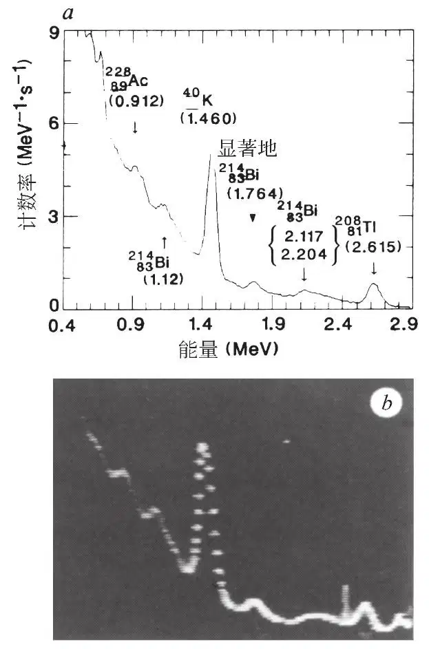
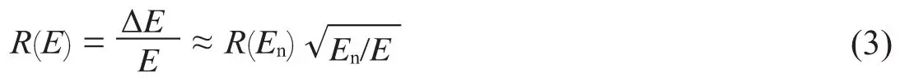
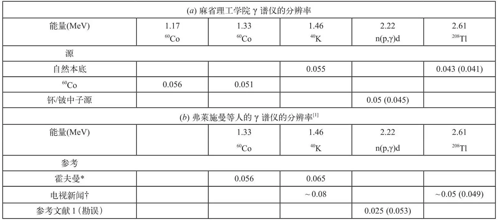
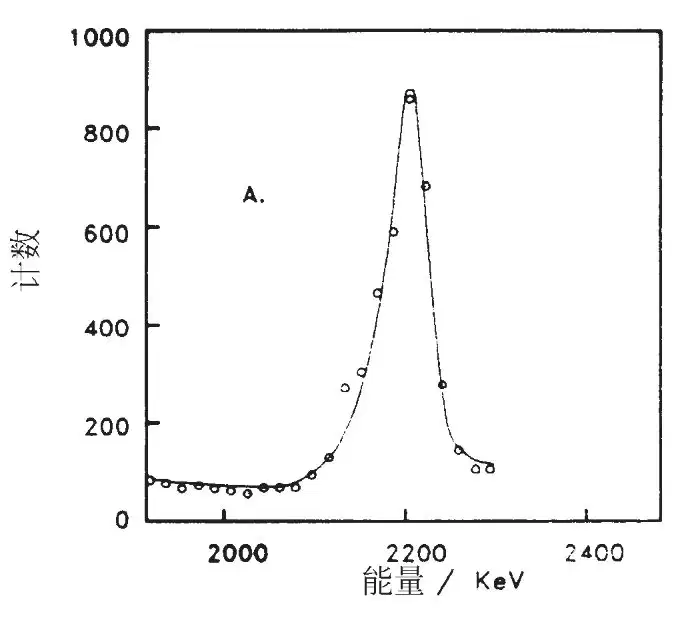
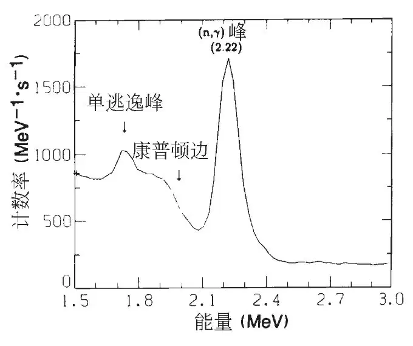

英文
英文佩特拉索等
编者按
电化学家马丁·弗莱施曼和斯坦利·庞斯宣称通过电解实现了“冷”核聚变，这引发了世界范围内去重复这一发现的尝试。而另一些人则关注弗莱施曼和庞斯的证据是否能够支持他们的结论。争论的关键在于他们是否在聚变反应和它的副产物中观测到了预期中的具有特定能量的中子和γ射线发射。麻省理工学院的核聚变专家理查德·佩特拉索和他的合作者研究了弗莱施曼和庞斯在美国的电视节目上演示的γ射线谱（这是他们唯一一次展示该图谱），并指出他们所声称的γ射线峰处于错误的位置。这一质疑引发了人们对冷核聚变的报告中存在欺诈的首次怀疑，而不仅仅只是对简陋实验的质疑。 英文
弗莱施曼、庞斯和霍金斯[1]最近宣称在他们的冷核聚变实验中观察到了明显的放热现象，他们将这一结果归因于大量的聚变反应。作为核聚变发生的强有力的证据，他们在报道中说发现了2.22 MeV的γ射线，该射线源于氢原子核对中子的捕获[2,3]
n + p → d + γ(2.22 MeV)
（1）
（其中d代表一个氘核。）他们认为反应（1）中的中子产生于下述反应
d + d → n + 3He
（2）
由此得出如下结论：首先，2.22 MeV的γ射线证实了核聚变过程（2）的发生；其次，量级为每秒4×104个中子的中子产生速率可以由他们的γ射线信号的产生速率推导而来；他们进一步声明大多数热量的产生并非通过过程（2），而是通过一个迄今为止并不清楚的核聚变过程。 英文
我们在本文中主要关注如何识别报道的那条γ射线，本文中我们将称之为信号线。我们认为弗莱施曼等人所声称的反应（1）中观察到的2.22 MeV的特征谱线其实并未被找到。我们这么认为主要基于以下三个定量的考虑：（1）谱线宽度是他们的仪器所允许的分辨率的一半；（2）在他们发表的数据中本应位于1.99 MeV的清晰可辨的康普顿边[4]，却没有出现；（3）他们估算的中子产率大了50倍。更进一步地说，考虑到地面的γ射线本底，我们怀疑他们所声称的γ射线实际上位于2.5 MeV处，而非2.22 MeV处。这些结论部分基于我们对氢捕获中子的研究，该研究通过将中子源浸没在水中进行。这些测量使得我们可以将弗莱施曼等人的结果与对照实验进行直接对比。 英文
为了比较我们与弗莱施曼等人的探测器的特性，我们测量了地面的本底γ射线谱。图1a显示了一个典型的地面本底γ射线谱，该光谱由3 in×3 in碘化钠（铊）晶体光谱仪系统（详见参考文献5）测得。在整个地面环境中γ射线本底谱的主要特征都非常相似[6,7]。弗莱施曼等人在电视上展示了一个类似的γ射线谱（图1b）。（我们相信我们看到了截止到4月19日在KSL电视台（犹他州）播出的所有的冷核聚变的γ射线谱。此信息从犹他州的犹他新闻剪影公司获得。在我们所能分辨的范围内，所有的光谱都与图1b所示的相同。）这个γ谱是从弗莱施曼等人的实验中获得的（霍金斯，个人交流）。他们的光谱仪系统由一个装有3 in×3 in碘化钠（铊）晶体的ND-6型便携式核数据分析仪组成（参考文献1以及与霍金斯和霍夫曼的个人交流）。一个3/8 in厚的铅圆筒包裹着闪烁体。从图1a和1b中，尤其是40K（1.46 MeV）和208Tl（2.61 MeV）的谱线中看得非常清楚，我们的分辨率与之相当或者优于弗莱施曼等人的γ谱仪，这一点我们后面还会谈到。 英文

图1．a，用一个3in×3in碘化钠（铊）探测器在麻省理工学院测得的γ射线本底谱。一些重要的地面γ射线谱线在图中被标示出来[6,7,12]。（正如参考文献12中所解释的那样，最终衰变产物的瞬态母核是可以辨认的。例如，40K经β+衰变后转变为处于核激发态的40Ar，其实这个核然后会放射出文章中讨论的1.460 MeV的光子。）γ谱是经过84小时测量后所取的平均值。b，弗莱施曼等人在电视上展示的γ射线谱。两张γ谱的主要特征是相似的；两个探测器具有相当的γ谱分辨率。b中，注意在大约2.5 MeV处和超出208Tl峰（2.61 MeV）处的奇异结构，看上去像是伪造的。（γ谱也可从犹他州的KSL电视台获得（霍金斯，个人交流）。） 英文
在1.46~2.61 MeV区间内，决定γ射线线宽的碘化钠（铊）γ谱仪能量分辨率可以由下式描述[8,9]

其中ΔE是γ谱线的半高宽（FWHM），E是光子的能量，R(En)为能量En处测量的“参考”分辨率。R(En)可以使用60Co源（即在1.33 MeV处60Co的谱线）进行准确的测定，或者通过40K在1.46 MeV处的衰变谱线进行相对准确的估算。（通过图1b中40K的衰变谱线可以估算出弗莱施曼等人的γ谱仪分辨率约为8%。）表1列出了我们和弗莱施曼等人的探测器的分辨率数据。 英文
表1. 两组γ射线谱仪能量分辨率的对比

本分辨率定义为半高宽（FWHM）除以峰值的能量。括号中的数字为基于探测器在1.46 MeV处的分辨率预测的数值（见文中）。在b中，预测值是基于霍夫曼（个人交流）提供的分辨率数值（1.46 MeV处为0.065）得出的。
* 霍夫曼（个人交流）。
† 从电视新闻节目的图像获得。 英文
我们现在将弗莱施曼等人的信号线（参考文献1（勘误）中的图1a，即本文所示的图2）与我们在氢捕获中子的实验中测量的γ谱（本文的图3和参考文献5的图4）来进行对比。在这些实验中，一个钚/铍的中子源被放置在水槽中。 放射出具有一定能量的α粒子，α粒子与铍通过（α，n）反应产生中子（参考文献4、9）。中子在水中达到热平衡，我们通过我们的γ谱仪对产生的中子捕获γ射线进行观测。测量的分辨率在2.22 MeV处约为5%（表1a），这一分辨率可以通过方程（3）合理地预测出来。因而，这立即引出了弗莱施曼等人的信号线作为γ射线峰的验证问题。具体来说，图2表明信号线具有2.5%的分辨率。这是在从40K的衰变谱峰（1.46 MeV）或者60Co源（1.33 MeV）获知的分辨率（表1b）的基础上根据方程（3）计算出的分辨率的二分之一（霍夫曼，个人交流）。但是我们从表1知道，弗莱施曼等人使用的γ谱仪分辨率在1.46 MeV到2.61 MeV的整个范围内至多与我们的仪器相当（见图1），而这与他们在2.22 MeV处的线宽只有推算值的二分之一不相符。 英文
放射出具有一定能量的α粒子，α粒子与铍通过（α，n）反应产生中子（参考文献4、9）。中子在水中达到热平衡，我们通过我们的γ谱仪对产生的中子捕获γ射线进行观测。测量的分辨率在2.22 MeV处约为5%（表1a），这一分辨率可以通过方程（3）合理地预测出来。因而，这立即引出了弗莱施曼等人的信号线作为γ射线峰的验证问题。具体来说，图2表明信号线具有2.5%的分辨率。这是在从40K的衰变谱峰（1.46 MeV）或者60Co源（1.33 MeV）获知的分辨率（表1b）的基础上根据方程（3）计算出的分辨率的二分之一（霍夫曼，个人交流）。但是我们从表1知道，弗莱施曼等人使用的γ谱仪分辨率在1.46 MeV到2.61 MeV的整个范围内至多与我们的仪器相当（见图1），而这与他们在2.22 MeV处的线宽只有推算值的二分之一不相符。 英文

图2．弗莱施曼等人所声称的2.22 MeV的γ射线信号线的重复实验（参考文献1的勘误中的图1a）。基于线宽，分辨率约为2.5%。在这样的分辨率下，预期可以在1.99 MeV处看到清晰可辨的康普顿边。可是显然没有康普顿边。另外，2.5%的分辨率与他们的γ谱分辨率不符。进一步说，我们怀疑那个信号线可能位于2.5 MeV处，而不是弗莱施曼等人所声称的以及这里所展示的2.22 MeV处。 英文
发表出来的信号线（图2）还有第二个严重的矛盾。如果我们假设2.22 MeV处的分辨率为2.5%，那么在1.99 MeV处应该有一个清晰可辨的康普顿边[4]。比如，即使对于我们的测量分辨率仅有5%的结果而言，图3中的康普顿边也非常明显。对于2.5%的分辨率而言，康普顿边的轮廓应该更锐利。信号线在1.99 MeV处康普顿边的缺失否定了弗莱施曼等人观察到的氢捕获中子产生2.22 MeV的γ射线的结论。 英文

图3．在使用浸入水中的（钚/铍）中子源进行的氢捕获中子的实验中，通过一个3in×3in碘化钠（铊）γ谱仪测得的γ射线谱。因为晶体的有限尺寸（与弗莱施曼等人[1]使用的完全相同），我们也看到了逃逸峰[2-4]，尤其重要的是，我们看到了康普顿边[4]。本图中，数字化能量的宽度为每通道0.024 MeV。钚/铍以及本底的全谱示于参考文献5中的图4。 英文
我们也要指出，在我们的（钚/铍）中子捕获实验中，一个明显的正负电子湮灭的单逃逸峰出现在1.71 MeV处（图3），在1.20 MeV处也存在一个双逃逸峰。（钚/铍实验中的全谱以及本底光谱都可以在参考文献5中找到。）这些特征毫无疑问地确认了初始的γ射线具有2.22 MeV的能量，这也是用一个有限尺寸的碘化钠闪烁体探测γ射线的物理过程的必然结果。 英文
分别基于他们的γ射线和中子测量的结果，弗莱施曼等人声称观察到了约为每秒4×104个中子的中子产生速率（参考文献1）。基于下述的几个定量分析，这一结论与他们的γ射线信号线明显不符。我们实验中使用的钚/铍中子源经过了校准，中子产率为每秒1.5×106个中子，该值的校准精度为10%（参考文献10和麻省理工学院反应堆辐射防护办公室）。在获得图3的数据的过程中，我们使用的实验装置与弗莱施曼等人所使用的装置类似（参考文献1；电视广播；与霍金斯和霍夫曼的个人交流）。我们的钚/铍中子源被浸入水槽中的水下6 in处。对应于2.22 MeV的峰的中子产生速率在扣除连续的本底之后大约为每MeV每秒1.4×103个中子（见图3）。将这个速率放大到每秒4×104个中子（弗莱施曼等人所给出的水平），对整个线宽进行积分，得出整个2.22 MeV的γ射线的产生速率为每秒4.5个中子。这一数值是根据图1a中的结果计算出来的速率（即每秒0.081个中子）的50倍。（弗莱施曼等人指出，他们的中子计数速率是用一个三氟化硼中子计数器在一个0.4 mm×10 cm的钯电解池上测得的，而γ射线的测量是在一个0.8 mm×10 cm的钯电解池上进行的[1]。如果整个反应的速率如他们所说的正比于钯棒的体积，那么报道的中子产生速率的差别将达到200倍而不是50倍。）反应速率存在两倍的差异也许可以从几何尺寸方面给予解释，但相差50倍的原因就无法解释了。 英文
关于信号线的确认更进一步的问题是谱峰出现位置的能量的准确值。从图2中，临近谱峰的本底看上去约为80计数/通道，这个量级与累计48小时约400计数/通道的值是相对应的（图2中的数据累积了10小时[1]）。另一方面，在犹他州测量的地面γ射线本底中，在2.22 MeV特征峰附近的本底数量级约为4,000计数/通道（霍夫曼，个人交流）。而整个γ射线谱（1.46~2.61 MeV）的本底都低至400计数，其中唯一与之相当的部分就是在能量2.5 MeV附近（霍夫曼，个人交流）。因此，我们质疑图2中γ谱的谱峰可能位于2.5 MeV处而不是在2.22 MeV处。 英文
对弗莱施曼等人声称的特征峰进行正确分辨的重要性再怎么强调都不为过。然而，非常遗憾的是在他们发表的图1a中仅展示了1.9~2.3 MeV的能量范围，却没有提供40K（1.46 MeV）和208Tl（2.61 MeV）的特征峰作为支持的证据，而为了证实他们的观点是正确的，这些峰本应出现在他们的谱图中。 英文
因此，尽管弗莱施曼等人可能在他们的γ射线光谱中观察到了某种由探测器位置改变所造成的变化，但正如之前人们所提出的那样[11]，我们认为那与2.22 MeV的中子捕获γ射线并无关联，也与本底的 谱线（2.20 MeV；图1a）无关。除了认为可能是仪器出错，而与γ射线的作用无关以外，我们不能够为这个现象提供其他可信的解释。 英文
谱线（2.20 MeV；图1a）无关。除了认为可能是仪器出错，而与γ射线的作用无关以外，我们不能够为这个现象提供其他可信的解释。 英文
（李琦 翻译；李兴中 审稿）